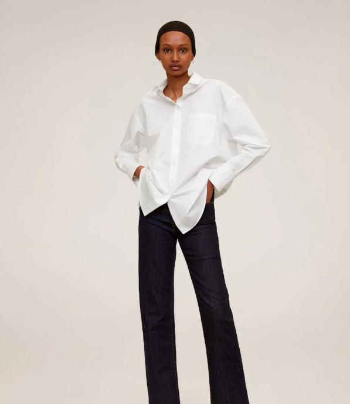
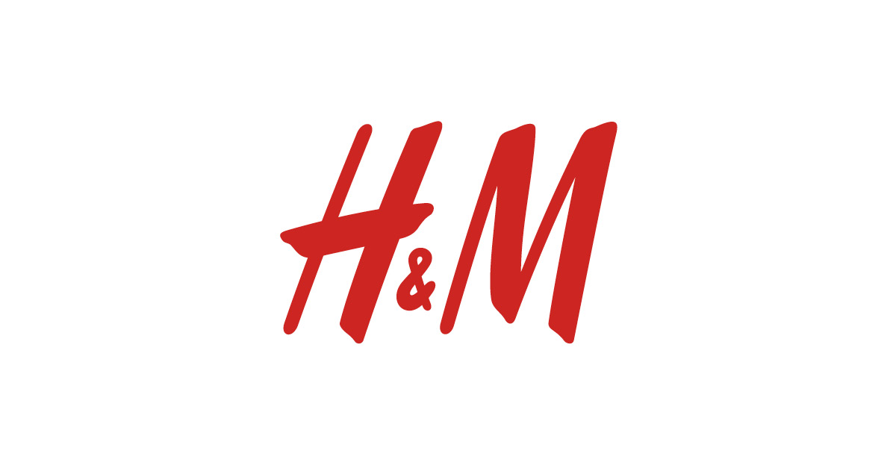
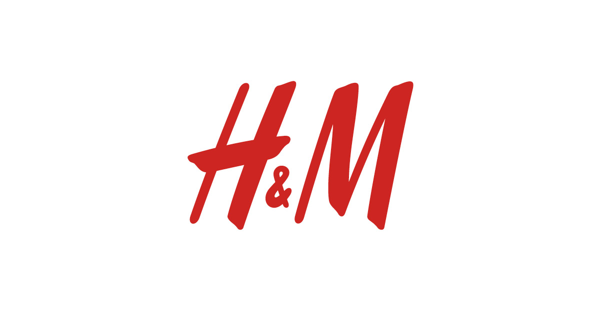
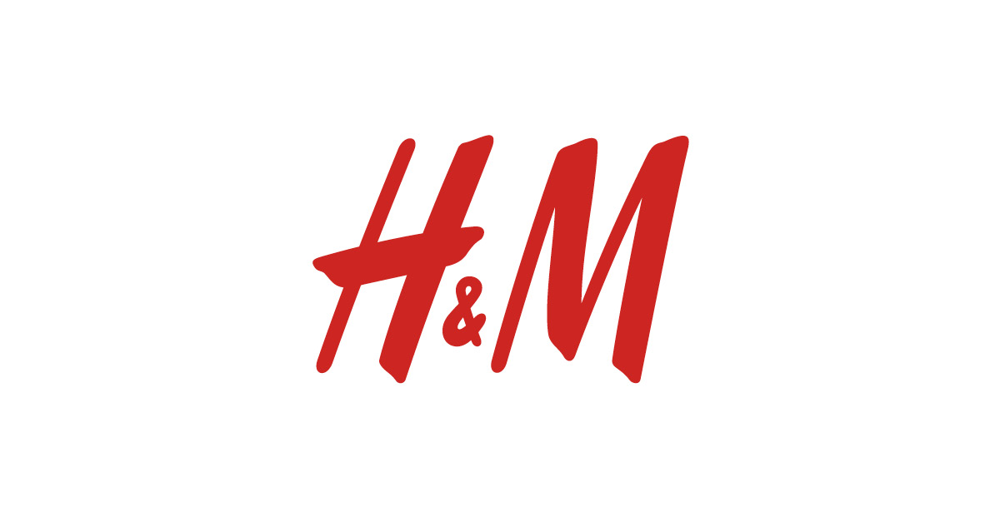

Большой выбор товаров
Die Sachen — крупнейший онлайн-магазин модной одежды, обуви и аксессуаров в Украине. Здесь Вы можете купить все модные новинки с доставкой на дом.В каталоге интернет-магазина Die Sachen более 1000 брендов мужской, женской и детской обуви и одежды разных ценовых категорий, всего более 2 000 000 товаров.
Наш ассортимент постоянно пополняется новыми товарами и брендами, в числе которых есть как всемирно известные производители (Mango, Incity, SAVAGE, Tom Tailor, Adidas и другие), так и дизайнерские марки, эксклюзивно представленные на Die Sachen.
⠀⠀⠀
⠀⠀
⠀⠀
⠀ ⠀
 


 ⠀
⠀

⠀
Интернет-магазин одежды, косметики для семейного использования
Доставка по всей Украине
Die Sachen— это европейский уровень сервиса. Мы обеспечиваем быструю доставку товаров по всей стране. Ваш заказ будет доставлен в любую точку Украины до 8 дней. Вместе с ведущим логистическим оператором по доставке товаров в Украине — MEEST EXPRESS — мы постоянно улучшаем наш сервис и делаем все возможное, чтобы Вы получили Ваш заказ как можно скорее. Доставка по всей Украине бесплатная при сумме заказа от 750 гривен. Если сумма заказа менее 750 гривен, стоимость доставки составит 69 гривен при курьерской доставке, 49 гривен при заказе на отделение и 39 гривен при заказе на постамат. Подпишитесь на нашу рассылку, чтобы первыми узнавать о новостях доставки, а также о скидках и акциях на сайте Die Sachen.
Оплата и возврат
Другие продавцы на Die Sachen
СКИДКА 15% на первую покупку